Profile studio
Collect usernames, names, bios, avatars, counts, verification, categories, and external links.
Discover profiles, posts, followers, following, comments, and likers in one polished Chrome side panel—without a cloud service or API account.
Choose a quick run or build a custom harvest, then export exactly what you need.
Collect usernames, names, bios, avatars, counts, verification, categories, and external links.
Discover posts, reels, captions, timestamps, likes, comments, thumbnails, and carousel slides.
Capture followers, following, likers, and comment threads with user-confirmed list dialogs.
Download full JSON, flattened CSV files, or a ZIP of named post images.
Download the latest packaged release, extract it, and load it as an unpacked Chrome extension.
chrome://extensions in a new Chrome tab.manifest.json.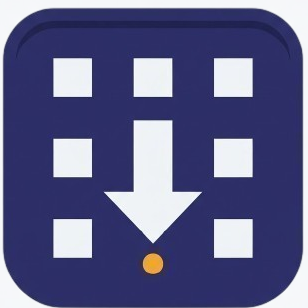
Paste a username or profile URL, then select Quick, Deep, or Custom.
Open follower, following, or liker dialogs only when the panel requests them.
Save structured JSON, flattened CSV files, or properly named post images.
Follow the sections below exactly. No programming knowledge is required.
InstaHarvest.zip, right-click it, and choose Extract All.chrome://extensions in the address bar. Press Enter.manifest.json.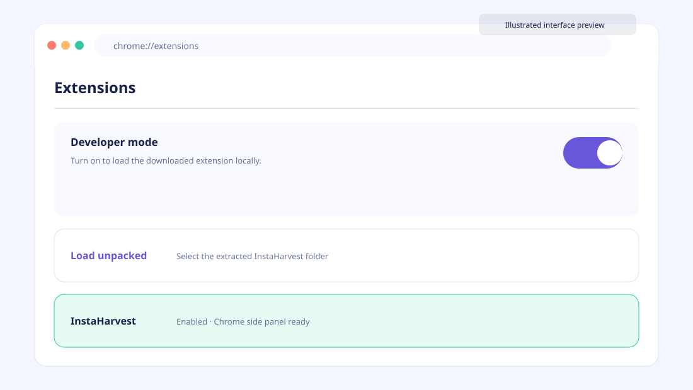
your.profile, or paste the complete Instagram profile URL.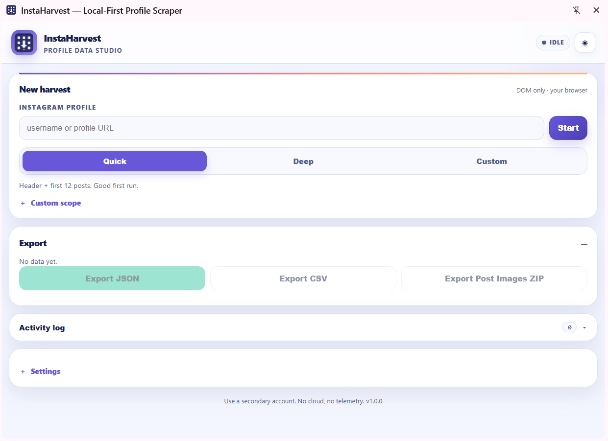
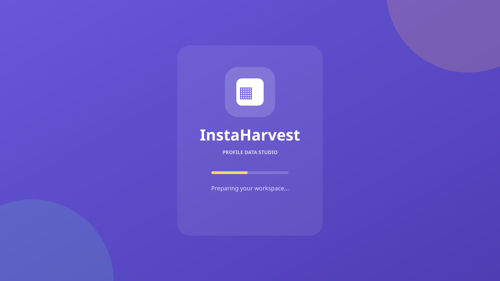
0 for no post limit where supported.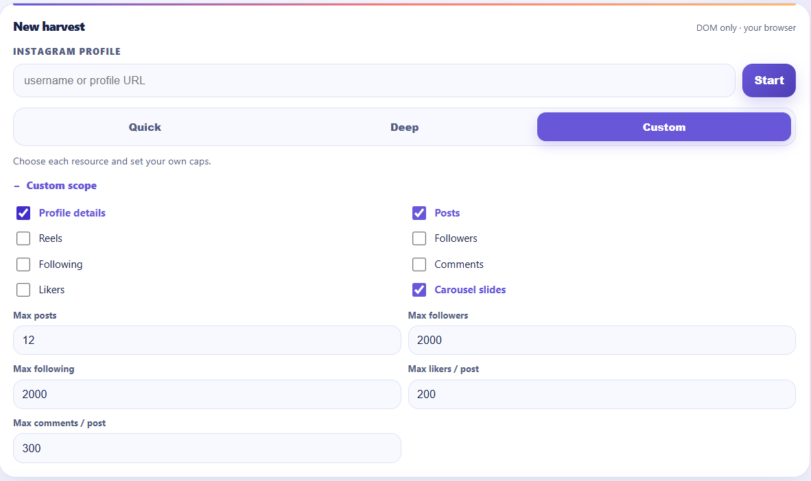
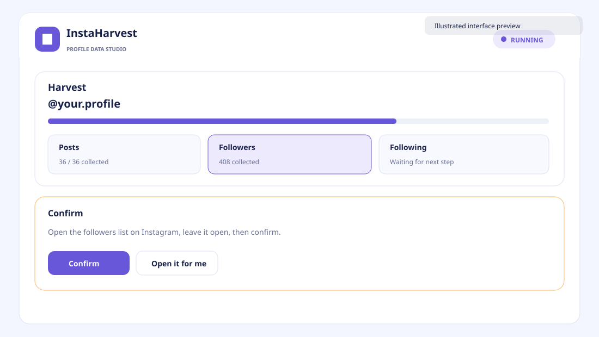
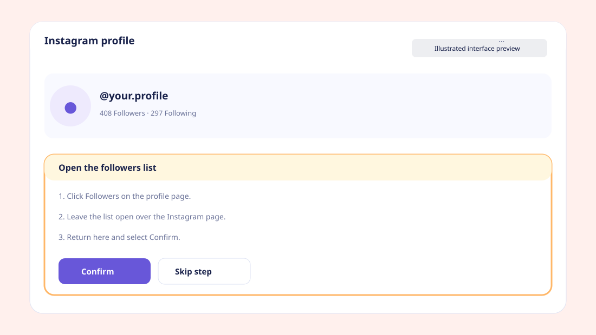
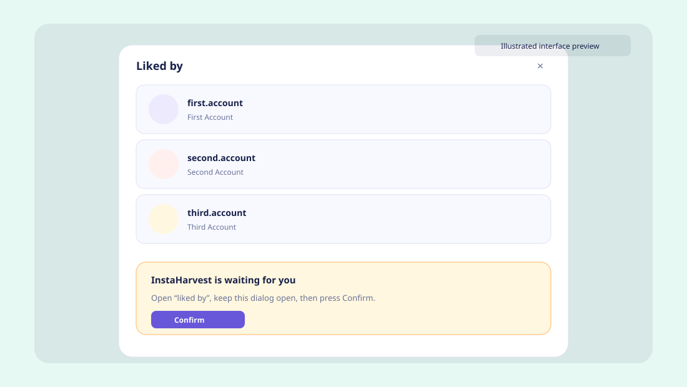
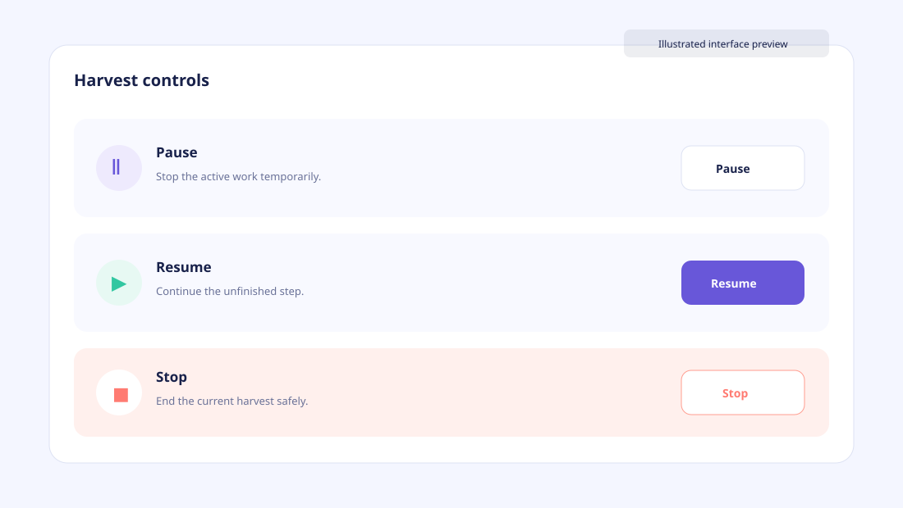
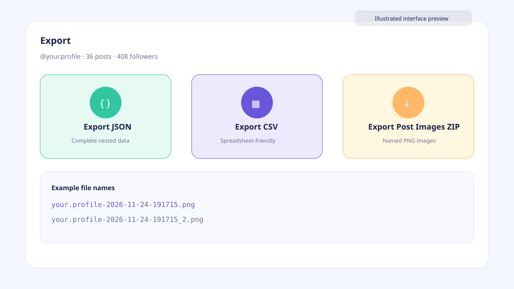
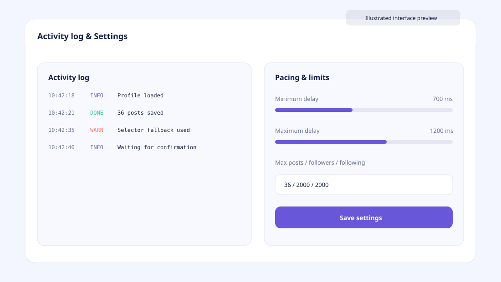
No cloud service, analytics backend, or telemetry. IndexedDB stores the data in this browser profile; exports are created on your device.
Automation may violate Instagram's Terms of Service and can affect account access. Use a secondary account and comply with applicable privacy laws.